Vulnerability Management
To view a full list of yours findings you can access the Vulns view by clicking the Vulnerabilities button on the left menu.
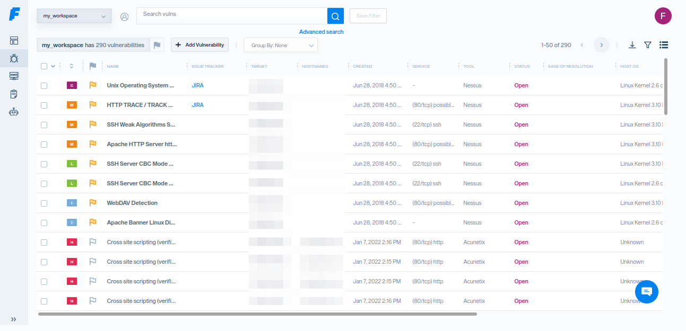
The Vulns View provides several options including vulnerability search, filtering and management.
Personalize this view by adding or removing columns in the Edit Column Order view, where you can select or deselect them from their checkboxes. You can access this view by clicking this button in the top right corner.
Also, you can drag & drop some labels of columns and change their order on the table.
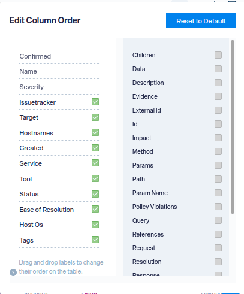
These changes will be persisted in your browser from session to session, so you only have to apply them once.
There are many ways to add vulnerabilities into Faraday, create them manually, import scan reports, with supported tools, Faraday Agents or using Faraday API.
Import Scan Reports¶
You can upload a scan report of your favorite tool to Faraday and have a nice look at your findings through the Vulns View. You can see a list of the tools that Faraday supports by clicking on this link
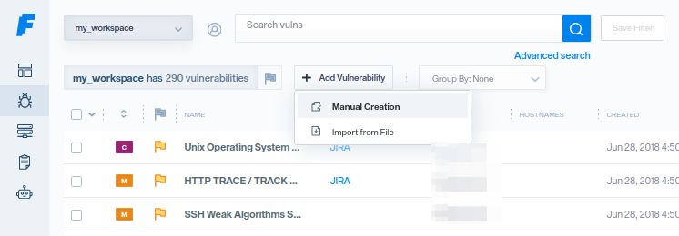
In order to upload a report to Faraday, follow these instructions:
- Click on the button + Add Vulnerability.
- Click on the button Import from file and a prompt will be displayed.
- Click on Browse in order to select the report that you are going to upload, or just drag and drop the file into the box.
- Once you have selected the report, click on Upload and your file will be uploaded.
- Refresh the view with the top bar refresh icon.
Create a Vulnerability¶
To create vulnerabilities manually, you can go to the Vulns View page and click the + Add Vulnerability button and then click on Manual Creation. You should see a dialog similar to this:
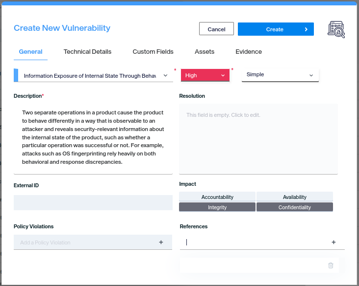
The image above shows the tab General that allows you to specify the name, description and severity of your vulnerability. Also, you can specify the ease of resolution, an external ID, its impact, a resolution, its policy violations and references.
You also have another tabs in order to add more information to your vulnerability:
-
Technical Details: allows you to add the field data to your vulnerability. If you're creating a web vulnerability, you add information about request and response.
-
Custom Fields: allows you to add information to a field that you have created. For more information about Custom Fields, you can check it here.
-
Assets: when you fill at least the three mandatory fields of the General tab (name, description and severity), the Assets tab becomes available. Here you can select from a select box 1 to N targets (in order to create 1 to N vulnerabilities), or type a new target if it's not yet in the list.
-
Evidence: allows you to add an evidence to the vulnerability. It can be a PNG or JPG image.
Make sure you select a host (and a service if the vulnerability applies to it), a name and a description. These fields are mandatory to create a vulnerability
Edit Vulnerabilities¶
You can edit the vulnerabilities that you have created or imported. You have multiple ways to edit them.
From Vuln Preview¶
You can see a preview of the vulnerability by click on the vuln's name. From here you can edit your vulnerability, and it will be saved automatically.
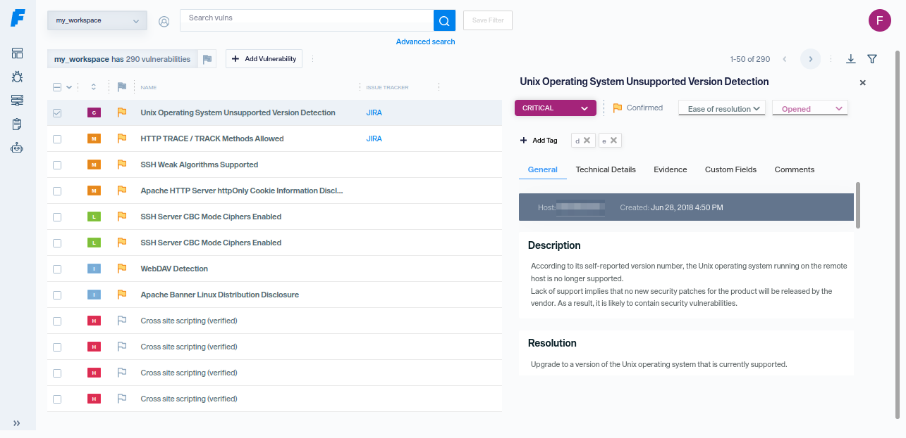
As you can see in the image above, there is a new tab named Comments where you can leave comments and mention other users to notify them about important events in real time. For more information about Comments, you can check it here
Edit Button¶
If you click on the Edit icon, the vulnerability edit mode will open
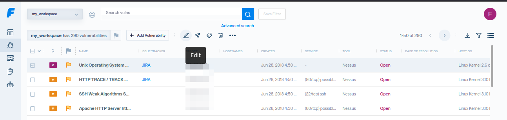
Once you finish updating click on SAVE at the end of the section you are changing.
Edit Multiple Vulnerabilities¶
You can select and edit multiple vulnerabilities with just one click. Next to the edit button, you will find a three dotted button that will show a dropdown with the multiple values that you can edit at once or actions like, Create vulnerability templates (KB)
Delete Vulnerabilities¶
Select one or more vulnerabilities and click Delete icon
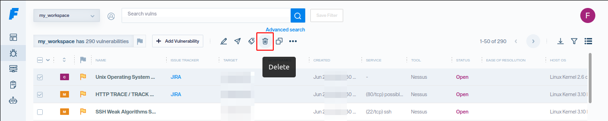
Confirmed Vulnerabilities¶
You can filter your vulnerabilities by confirmed, unconfirmed by clicking on the Flag icon button:
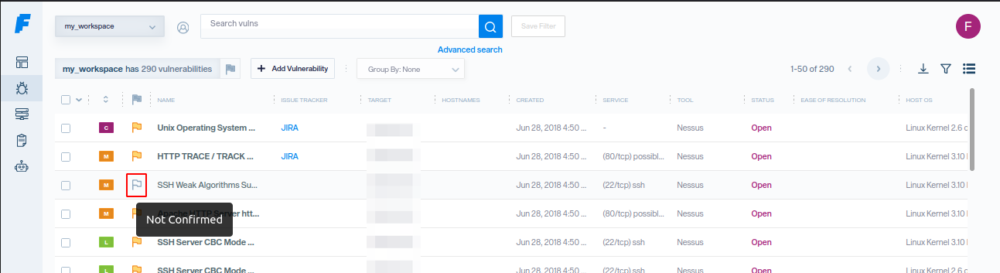
Tags¶
Tags allow you to organize your vulnerabilities by letting you make and edit categories: environment, technology, state, language, projects, etc. You can also use Tags for Reports, allowing you to filter which vulnerabilities you want to generate a report for.
How to Tag Vulnerabilities¶
Select the vulnerabilities that you want to tag.
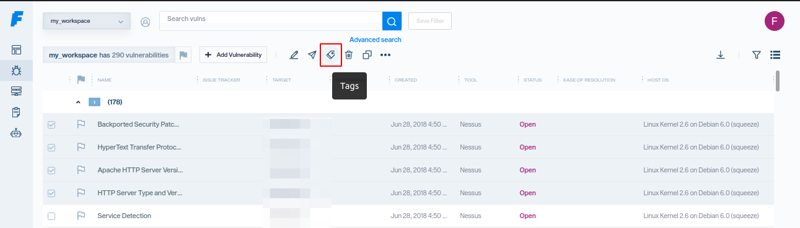
Click on the "Tags" icon and select if you have a preset tag or Create tag button if you need a new one.
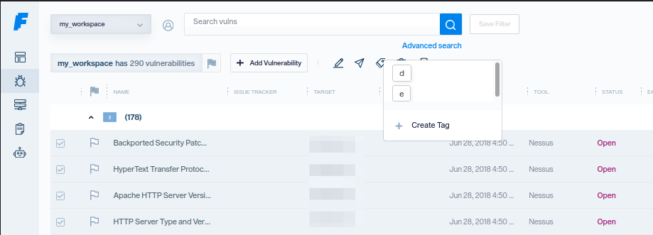
If you are going to create one just put a relevant name and a dialogue will be displayed.
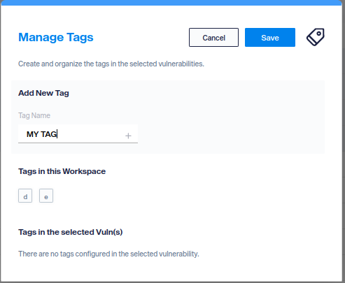
Now the vulnerability has tags that you can use for filtering, searching or reporting

Search and Filter Vulnerabilities¶
Vulns View allows you to filter vulnerabilities, so you can have a better workflow.
You can search or filter your data by specifying a keyword or multiple keywords.
Field values are not case-sensitive
How To Filter¶
In order to perform a search, first click on the search bar and follow these steps:
- Select if you want to filter by Vulnerabilities or Assets.
- Enter the name of the field (e.g. severity) and select from the list displayed.
- Select the connector type that you need to perform the wanted filter (these connectors vary according to the field selected).
- Finally, type your query or select an option from the list displayed, according to the field and connector selected.
- Repeat steps 2 to 4 if you want to filter by more than one field.
Examples:
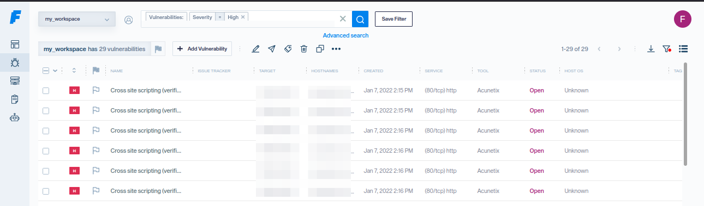
You can also click on blue fields of the vulnerability like Service, Hostnames, Target, Owner, etc. to trigger a search on the specific field
Filter Fields¶
Now, let's take a look at which fields are available for filtering with an example. All of them are searched through the search field
- Name | = | TCP timestamps
- Description | contains | Vulnerability testing
- Severity | = | Medium
- Target | = | 127.0.0.1
- Service name | contains | https
- Service port | >= | 5000
- Ease of Resolution | = | Moderate
- Status | != | Closed
- Resolution | contains | Resolution for testing vuln
- Data | contains | Search and filter
- Request | contains | json
- Response | = | OK
- Method | = | POST
- Path | = | Vulnerability Path
- Creator command id | != | 1
- Type | = | Vulnerability Web
- Confirmed | = | True
- ID | = | 57448
- Tag | = | my_tag
From the Vulns view you will be able to find the information using the tags parameter
For example: tags:"MY TAG" as shown in the image below
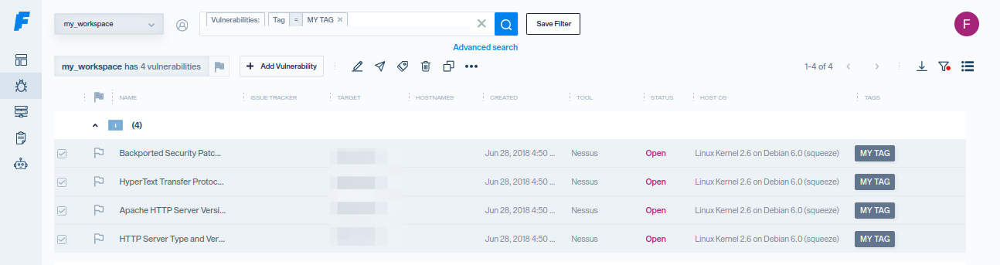
Saved Filters and Quick Filters¶
The filters that you create from the search bar, you can save them in order to use them in other opportunities.
You can access to these saved filters from the filters button in the top right corner.
When you click that button, a dialog opens, in addition to selecting a saved filter, you will be able to select from a varied list of quick filters, as shown in the image below.
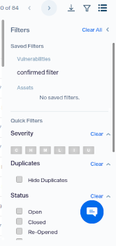
Download a Filtered Workspace¶
You can download a csv file of the filtered workspace (or the full workspace if no filters applied). In order to do so, you have to click on the Download Filtered Workspace button located next to the filters button in the top right corner.
Context Menu¶
A new feature in Faraday is the Context Menu, which you can access by right-clicking on the Vulns view.
Single selection context menu¶
If you have a single vulnerability selected you will access to the single selection context menu. It should be noted that if you don't have any vulnerability selected yet, the vulnerability of the row where you perform the right click will be selected in order to be used by the context menu.
This menu allows the user to execute some actions in a faster manner, such as:
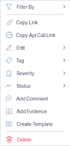
- Filter By
- Name: creates and executes a filter of the form
Name | contains | {name_of_selected_vuln}. - Service name: creates and executes a filter of the form
Service name | = | {service_name_of_selected_vuln}. - Target: creates and executes a filter of the form
Target | = | {target_of_selected_vuln}. - Date: creates and executes a filter of the form
Creation Date | = | {creation_date_of_selected_vuln}. - Status: creates and executes a filter of the form
Status | = | {status_of_selected_vuln}. - Tags: creates and executes a filter for each tag the selected vulnerability has, of the form
Tag | = | {tag_of_selected_vuln}. - Copy Link: copies to the clipboard the link of the detailed view of the selected vulnerability.
- Copy Api Call Link: copies to the clipboard the path of the selected vulnerability in order to be managed through Faraday API.
- Edit: enables the edition of some fields of the selected vulnerability:
- Name
- Data
- Description
- Resolution
- References
- Impact
- Policy violation
- Ease of resolution
- Tag: enables the addition of a created tag to the selected vulnerability and the creation of a new tag.
- Severity: allows you to select a new severity for the selected vulnerability.
- Status: allows you to select a new status for the selected vulnerability.
- Add Comment: allows you to add a comment on the selected vulnerability.
- Add Evidence: allows you to add an evidence on the selected vulnerability.
- Create Template: allows you to create a vulnerability template from the selected vulnerability.
- Delete: deletes the selected vulnerability.
Multiple selection context menu¶
If you selected more than one vulnerability, you will access to the multiple selection context menu. It's a shortened version of the regular context menu:
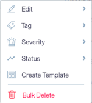
- Edit: enables the bulk edition of some fields of the selected vulnerabilities:
- Name
- Data
- Description
- Resolution
- References
- Impact
- Policy violation
- Confirm/False positive
- Ease of resolution
- Tag: enables the addition of a created tag to the selected vulnerabilities and the creation of a new tag.
- Severity: allows you to select a new severity for the selected vulnerabilities.
- Status: allows you to select a new status for the selected vulnerabilities.
- Create Template: allows you to create a vulnerability template from each of the selected vulnerabilities.
- Bulk Delete: performs a bulk delete of the selected vulnerabilities.